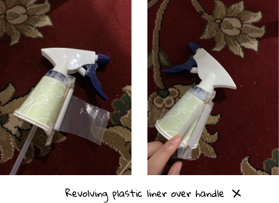

Introduction to Engineering is a project-based class at Dartmouth College, where students work in groups to design a product over the course of 10 weeks. During Summer 2020, our class was challenged to design a product that improves life outdoors.

Final Prototype Preview

The gas pump cleaner: A plastic frame that sits around the gas pump handle and automatically sanitizes it with ethanol once it’s been returned
Improving life outdoors
So, how did we get from improving life outdoors to sanitizing gas stations? We started by compiling a list of problems we have encountered or witnessed people encountering while outdoors. As we narrowed down our focus, we kept coming back to one main problem theme: sanitation of outdoor shared systems. We realized that many of the outdoor interactions we used to conudct so mindlessly - bike sharing, using ATM machines, getting shopping carts - had all changed recently due to the COVID-19 pandemic.
In the end, we chose gas station sanitation as our problem, as we all bonded over the agressive amounts of hand sanitizer we would use after going
to the gas station to get gas. We thought that this issue was extremely time-relevant, but it also had public health benefits beyond the COVID-19 pandemic.
As more gas stations adopt mobile free payment systems, we recognized that a clean gas pump handle was the missing piece to a completely sanitary gas station experience.
But does anyone care about sanitation?
Interviewing gas stations
Our first step to tackling the problem was to conduct user research with stakeholders that might be interested in our product. We started by interviewing gas station employees, to understand the key issues with current sanitation methods. We interviewed a total of 15 different gas stations, from small family owned gas stations to large grocery store chains such as Costco. From our interviews, we drew four key insights:
Key user testing insights
Many of the gas stations were limited to when they could sanitize due to low employee availability and high customer traffic. At peak hours - when sanitation is most necessary - employees are unable to sanitize the gas pump handles as it slows down business. Further, many gas stations only have 1-2 employees, so finding time during the day to sanitize isn’t always an option.
One conversation with a Mobil gas station employee really clarified why current sanitation methods don’t satisfy the root problem. This employee was a small business owner, and he said the reason he doesn’t provide free sanitation materials (gloves, hand sanitizer, etc.) to his customers is that people often steal them. While he wants to ensure that his customers are safe, the high cost of sanitation materials (especially if stolen) combined with lower customer demand has kept him from providing such offerings.
Interviewing car drivers
We also wanted to interview car drivers, to understand customer behavior and how they feel about the current state of gas station sanitation. From a survey to 60 people, we found the following results:
From our user survey, it became clear to us that individuals valued sanitation. Not only were people willing to go out of their way to get gas at a sanitized gas station, but they were even willing to pay more per gallon if the handle was completely sanitized. Thus, a disocnnect was identified and our problem statement was born: People value sanitation, yet due to cost and logistical limitations, gas stations are unable to provide it.
So, how do we clean a gas pump handle?
Once we narrowed down our problem, it was time to start solution thinking! We began by listing the main principles (specifications) for our product. We focused on both the interests of car drivers (safety, speed) and gas stations (low-maintenance, affordable).
Our product must be . . .

Product specifications
From these specifications, we created an alternatives matrix of different solutions. Our ideas ranged from robot gas attendants to a completely redesigned gas fill mechanism. After exploring these options, we decided to prototype two main ideas. The first alternative idea was a pump cleaning box, sort of like a car wash but for the gas nozzle. The second idea was a plastic covering around the gas pump handle, similar to the revolving toilet seat liners that are often found in airport restrooms.


After creating basic prototypes of both these solutions, we realized that the second solution had two main limitations. First, the shape of the gas pump
handle is much more irregular than a toilet seat, so covering the parts where an individual grasps the handle is extremely difficult. Second, by using
a paper or plastic liner, our solution will likely waste a lot of either material, since the liner will have to be replaced after every use. Thus,
we decided that a cleaning box solution was the best alternative for us to go with.
Building the structure
Once we decided that we were going to go with a “cleaning box” solution, we had to figure out how we were going to build this solution. Moreover,
we needed to figure out what materials we wanted to use while keeping our principles in mind.
Over the next few weeks, we interviewed seven different professors and machine shop instructors from the Thayer Engineering School, learning about polymers to construct the box, cleaning mechanisms, and ways to supply to power to our cleaning box. After talking with Zach Holcomb, an engineering manager at Huksy (one of the largest gas nozzle manufacturers in the US), we determined that an ethanol spray solution would be the best cleaning mechanism, since it doesn’t corrode the pump handles. Further, Zach recommended that we use acetal plastic for the exterior of our product, since it is an industry standard and is injection moldable for mass manufacturing.
Rapid prototyping

After deciding that the “cleaning box” solution was the avenue that we wanted to take, we began rapidly prototyping. We started with a looks-like prototype that helped us determine how this “box” would fit around the handle. From this iteration we realized that having a more rectangular shape would better fit on fuel dispensers and hold the interior parts. We decided that the battery, arduino, and peristaltic pump would sit flat on the top of the frame, while the ethanol storage container would be housed on the side. We sketched out this model first on paper, using measurements from an actual gas station, and then built our third prototype.
Testing the product
Because we only had 10 weeks for this project, we prototyped and tested in tandem, to make sure our product met the specifications we laid out at the beginning of the term.
Is it effective?
To test efficacy, we needed to determine both whether the ethanol spray covers the entire gas pump handle and whether ethanol completely kills viruses once on the handle surface. Due to legal implications of testing with COVID-19 virus samples, we were unable to test whether our product actually kills COVID-19 from the pump’s surface. However, based on our research and conversations with current gas station employees, we concluded that 80% ethanol sprayed for 10 seconds (as our product does) will kill COVID-19.
To test the spray coverage, we wrapped the gas nozzle in white paper towels and used our prototype to simulate a real life test. The orange-colored part is where the dyed ethanol was sprayed onto the handle. We found that our prototype covered the majority of the nozzle that is touched by drivers. Moreover, given current sanitation of nozzles only occurs once every few hours, our solution will be more effective regardless since it cleans the majority of the handle in between each fill.
Is it low-maintenance?
One of the main pain points we identified from our user research was that many gas station owners don’t have the ability to sanitize gas pump handles becuase they are busy with other responsibilities such as serving customers. As such, we wanted to test how frequent our prdouct would have to be maintained and whether it addressed this concern.
Based on the size of our product and the amount of ethanol it takes to sanitize the pump handle, our product can service about 94 customers before requiring an employee to refill the ethanol tank. Since a gas station can have at maximum around 100 customers per day, our product only has to be replaced once a day at most, requiring much less maintenance than current methods.
Is it fast?
We wanted to make sure that our sanitizing mechanism was fast enough to sanitize in between every two drivers that fill up their gas tank. Based on an experiment that we conducted at a local gas station, we determined that there is at minimum a 55 second window time frame between two people pumping gas at a single fuel dispenser.

To test the speed of our sanitation method, we simulated the ethanol spray under two extreme conditions: during mid-afternoon when the sun is shining the hardest and during a
colder night. Ideally, we would have liked to test this under a wider variety of climate conditions (different altitudes, temperatures, humitidy levels, etc.), however we were
faced with the limitation of testing at home. Thus, we just focused on these two “extremes” and measured the amount of time it took the ethanol to dry by using a piece of tissue
paper dabbed onto the surface of the handle after it was sprayed.

From this experiment, we found that the range of drying time for ethanol was between 15 and 45 seconds. Since our time window between two cars getting gas is 55 seconds (at minimum), we concluded that the dry rate of ethanol is quick enough without the necessity of an extra drying fan mechanism. The 55 second time window only occurs during peak hours, and even if the ethanol dry time does take longer (due to harsher climate conditions), we don’t forsee there being a huge issue with users touching a slightly wet gas pump handle, if they know that the handle they are touching is completely sanitized.
The final product
Our final product is a plastic frame that fits around the boot where the driver returns their gas pump handle after use. Once the handle is returned, the distance sensor activates and an ethanol cleaning solutions is sprayed onto the surface of the handle. Below are demonstrations of our prototype in action as well as a SolidWorks model of the internal parts.
Final product video
What we learned
This class was an incredibly rewarding learning opportunity, in terms of the technical skills I learned, but also regarding product design and building a business with potential in the real world. I never would have thought that I would be capable of being the SolidWorks designer for my group or develop an industry relationship with Husky, the largest gas nozzle manufacturer in the United States. Further, working with two groupmates that were equally passionate about this project and had complementary skillsets, pushed me to contribute more to the project and challenge different possibilties. I’m excited to see where this project takes us next!
Me and my wonderful team making a gas nozzle heart <3